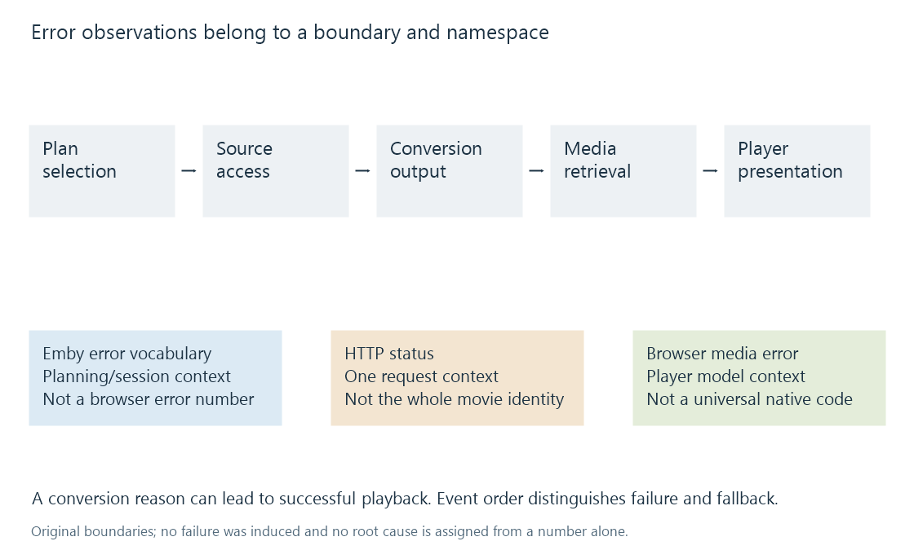

Playback error categories and evidence scopes
Playback errors identify observations at planning, access, processing, delivery or player stages, with their namespace and event context needed for interpretation.
Playback can fail before a media plan exists, while accessing a resource, during conversion, during retrieval or inside the player. Those failures need different evidence.
An error message describes an observation at one of those stages. Its code or wording is not automatically the original cause.
Keep the namespace with the code
| Example observation | Namespace and meaning |
|---|---|
| HTTP 403 | This HTTP request was forbidden |
| HTTP 404 | This request did not find an available target resource |
| Browser MediaError code 3 | A decoding-stage media error in the HTML media model |
| Browser MediaError code 4 | The selected source was unsuitable in that model |
| Emby NoCompatibleStream | A playback-information error identifying no compatible offered stream |
| A conversion-reason identifier | Evidence about why another media plan was selected |
The browser's number 3 has no universal meaning for a native player's unrelated error namespace. An HTTP status also concerns a particular request, not every aspect of the catalogue item.
Emby's public playback-information response defines its own error vocabulary. Its conversion-reason model describes another kind of state.
Identify the failing boundary

A denied source access can prevent any conversion. A writable-output failure can interrupt a converter that decoded the input correctly. A delivery request can fail after the server generated usable media.
A browser decode error supplies evidence about the player's stage. It does not, by itself, prove which packet or resource property caused it. The source representation, received data and decoder context still matter.
Likewise, “no compatible stream” does not prove the original file is corrupt. The available plan can fail to meet the requesting client's constraints even when the source is valid.
A reason is not always a failure
A container or audio mismatch can lead to a successful Direct Stream plan. An unsupported video presentation can lead to a successful replacement video.
Conversion-reason information therefore explains a decision; it should not automatically be counted as a failed playback.
A later fallback after an attempted original path introduces another event. Its reason and the final successful mode need the order of observations rather than one flattened label.
Aborts and interruptions need context
A user cancellation, seek-triggered job replacement or deliberate session stop can end a request or process. An exit or aborted operation is not automatically evidence of an accidental playback failure.
Conversely, a process can have started and printed output configuration before failing to deliver any useful interval. The earlier messages do not establish successful presentation.
Retain enough evidence to test a cause
The relevant record includes the affected stage, timestamp/clock context, source and selected tracks, the actual request or process, and what the player did next.
Playback information, conversion logs and a controlled reproduction supply complementary evidence. Their value comes from relating observations to the same session and boundary.
See Also
- What determines playback compatibility?
- Playback stalls and unavailable next media
- Reading Emby playback information
- Reading a transcoding log
- Reproducing a media playback problem